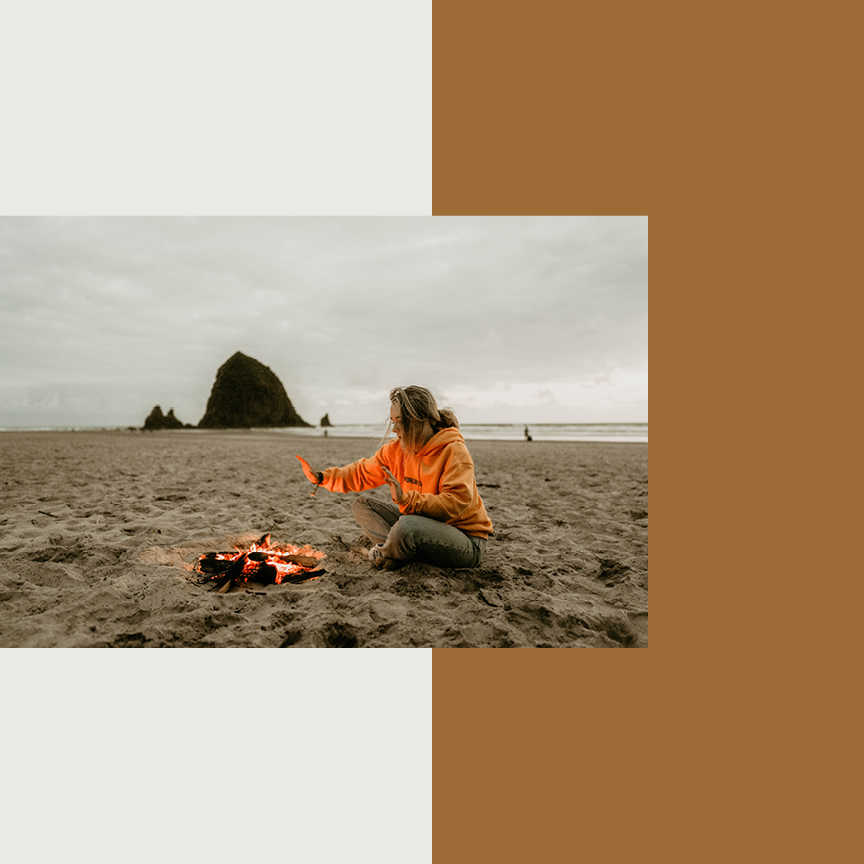

Northern Coast
Oregon's north coast isn't known as a surfing destination. But laid-back towns and big breaks make up for the nip in the air. It stretches from the mouth of the Columbia River south to north of Florence, and here lies the state's biggest and most touristy beach towns. Despite the tourists flocking in from the city, the beaches are expansive and the surf is never too crowded. While the weather may linger around sub-par, bluebird days break up the monotomy of grey skies and when the wind takes a break, glassy lines form.




Surf
Seaside Cove - Intermediate to Advanced
Indian Beach - All Levels
Short Sands - All Levels
Pacific City - All Levels
Oceanside - All Levels
Stay
Sea Ranch Resort - Cannon Beach
Meredith Lodging - Gearhart
Gilbert Inn - Seaside
Hart's Camp - Pacific City
Turtle Janes - Oceanside
Play
Neahkahnie Mountain Hike - Manzanita
Fort Stevens State Park - Astoria
Haystack Rock - Cannon Beach
Seaside Aquarium - Seaside
Tillamook Creamery - Tillamook